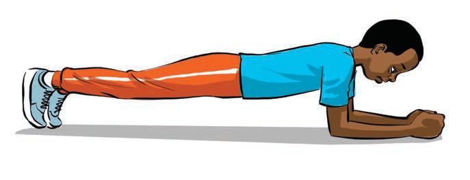

Planks strengthen the abdominal and back muscles, helping players to be stable when running or jumping.
How to do planks:
Lie face down, supporting yourself on your hands and toes;
Keep your body upright; do not let your waist dip or rise; and
Hold this position for 30 to 60 seconds, then relax and repeat 3 times, by following steps (i-ii) as shown in Figure 4.

Figure 4: Carrying out the plank exercise
Activity 3(a)Do a push-up exercise individually.(b)Compete with your friends to do the push-ups as many times as possible.(d) PlanksPlanks strengthen the abdominal and back muscles, helping players to be stable when running or jumping.How to do planks:(i)Lie face down, supporting yourself on your hands and toes;(ii)Keep your body upright; do not let your waist dip or rise; and(iii)Hold this position for 30 to 60 seconds, then relax and repeat 3 times, by following steps (i-ii) as shown in Figure 4.A boy holds a plank with his body straight, resting on his forearms and toes.Figure 4: Carrying out the plank exerciseActivity 4(a)Practice planks individually.(b)In pair, compete by doing planks for as many seconds as possible.